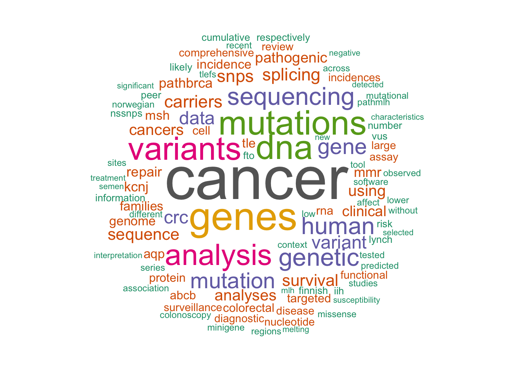

Sigve Nakken
scientist // institute for cancer research // oslo, norway.
cancer data science, clinical bioinformatics, DNA variation, precision cancer medicine
I am a research scientist working in Eivind Hovig’s group at the Institute for Cancer Research in Oslo, Norway. Most of my activities involve cancer data science, i.e. analysis of data from high-throughput molecular profiling of tumor samples. During the last years, I have been part of the Norwegian Cancer Genomics Consortium, a national effort on clinical cancer genomics. I am currently affiliated with the Centre for Cancer Cell Reprogramming (CanCell). My background is in computer science from NTNU/University of Minnesota, and I received my PhD in computational biology from the Centre for Molecular Biology and Neuroscience at the University of Oslo.
Main ongoing research activities:
- Cancer genome interpretation
- Data integration for cancer systems biology
- Computational modeling of drug response in cancer
- Hereditary cancers - risk assessment and variant interpretation
I supervise MSc students at the Department of Informatics, University of Oslo, which have included projects on:
- text mining of clinical trial data
- evaluation of methods for cancer driver gene prediction
- cluster analysis of data from genome-wide association studies
- comparison of somatic and germline mutational spectra
- mutational signatures in cancer - relationship to drug response and survival
A wordcloud from abstracts of co-authored papers, reflecting themes of scientific output:
